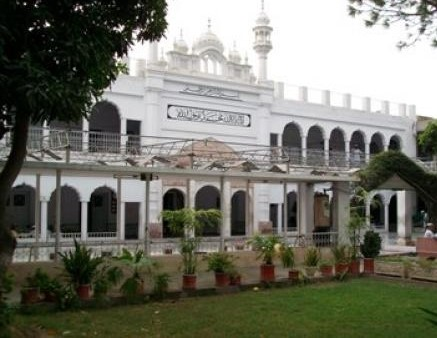
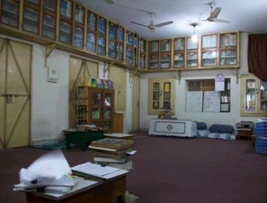

جامعہ دارالعلوم اسلامیہ
جامعہ دارالعلوم اسلامیہ لاہور کی بنیاد ایک بہت بڑے اور عظیم سکالر علامہ شبیر احمد عثمانی صاحب کی ایما پر رکھی گئی-علامہ شبیر احمد عثمانی صاحب ان علما کرام میں سے ایک ہیں جنہوں نے پاکستان کی تحریک آزادی میں قایِد اعظم کے شانہ بہ شانہ کام کیا۔ شروع میں مولانا متین خطیب کو منتظم مقرر کیا گیا اور آخر میں قاری سراج احمد کو۔ طلبا کو پڑھانے کے لئے قاری عبدالملک شوقی، قاری صدیق لکھنوی، قاری اظہار احمد تھانوی اور قاری افتخار احمد عثمانی جیسے مشہور ماہرین کی خدمات حاصل کی گئیں۔1983 تک درس نظامی ، ناظرہ قرآن، حفظ قرآن، تجوید اور بنیادی تعلیم طلبا کو دی گئی۔1983 میں مولانا محمد مالک کاندھلوی کو مشاورتی کمیٹی کے ارکان نے کمیٹی کا سربراہ منتخب کیا۔ انہوں نے مولانا مشرف علی تھانوی (مرحوم) کو پرنسپل مقرر کیا اور پھر اس کے بعد ایک نیا دور شروع ہوا۔
 تعارف
تعارف
مشرف علی تھانوی نے اپنے چھوٹے بھائی ڈاکٹر احمد میاں تھانوی کو تدریس کی دعوت دی جو اسلامی یونیورسٹی (سعودی عرب) میں زیر تعلیم تھے قاری احمد میاں تھانوی نے اعلیٰ تعلیم مکمل ہونے کے بعد جامعہ دارالعلوم اسلامیہ میں شمولیت اختیار کی۔ ان دونوں نے دونوں شعبوں درس نظامی اور تجوید و قرآت کو یکجا کرکے ایک منفرد تعلیمی نظام متعارف کرایا۔ دونوں شعبوں کو ہر طالب علم کے لئے لازمی قرار دیا گیا تھا۔ 1992ء میں عصری تعلیم کو بھی ضم کر دیا گیا۔ یہ منفرد نظام طلباء کو ایک کلاس روم کے اندر ایک وقت میں تین مختلف قسم کی تعلیم حاصل کرنے کا موقع فراہم کرتا ہے۔
مقاصد
قرآن، حدیث اور ان کے مزید مطالعے کی تعلیم کو پھیلانے کے لئے اچھی تعلیم کے ساتھ ساتھ طلباء میں اچھا برتاؤ پیدا کرنا۔ اسلامی اور جدید علوم کے ماہرین تیار کرنا جو لوگوں کو درپیش اسلامی اور جدید مسائل کو حل کر سکیں۔ طلباء میں تحقیقی رویہ پیدا کرنا۔ کمپیوٹر سائنس کی بنیادی باتیں پڑھانا تاکہ وہ معاشرے کے ایک فعال شخص کے طور پر کام کر سکیں۔ جامعہ دارالعلوم اسلامیہ کے طلباء کو تعلیم کے جدید نصاب سے آگاہ کرنا۔